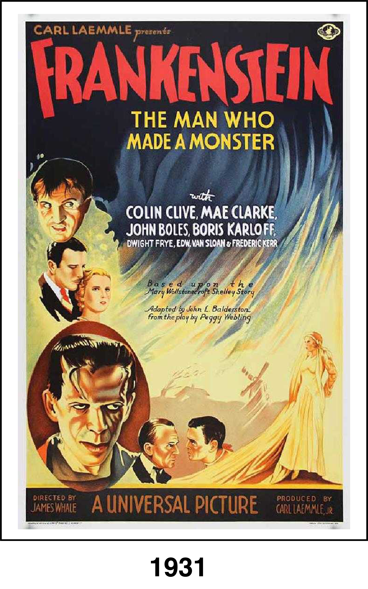
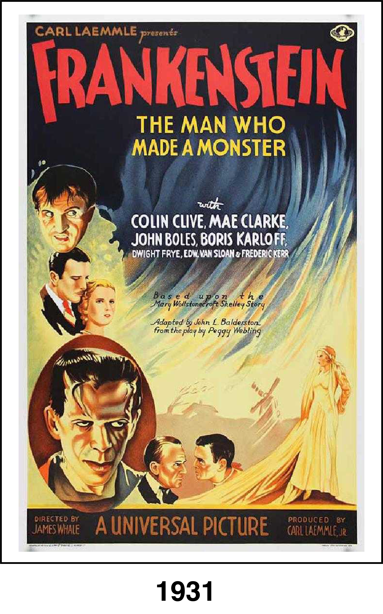

This iconic horror film follows the obsessed scientist Dr. Henry Frankenstein (Colin Clive) as he attempts to create life by assembling a creature from body parts of the deceased. Aided by his loyal misshapen assistant, Fritz (Dwight Frye), Frankenstein succeeds in animating his monster (Boris Karloff), but, confused and traumatized, it escapes into the countryside and begins to wreak havoc. Frankenstein searches for the elusive being, and eventually must confront his tormented creation.